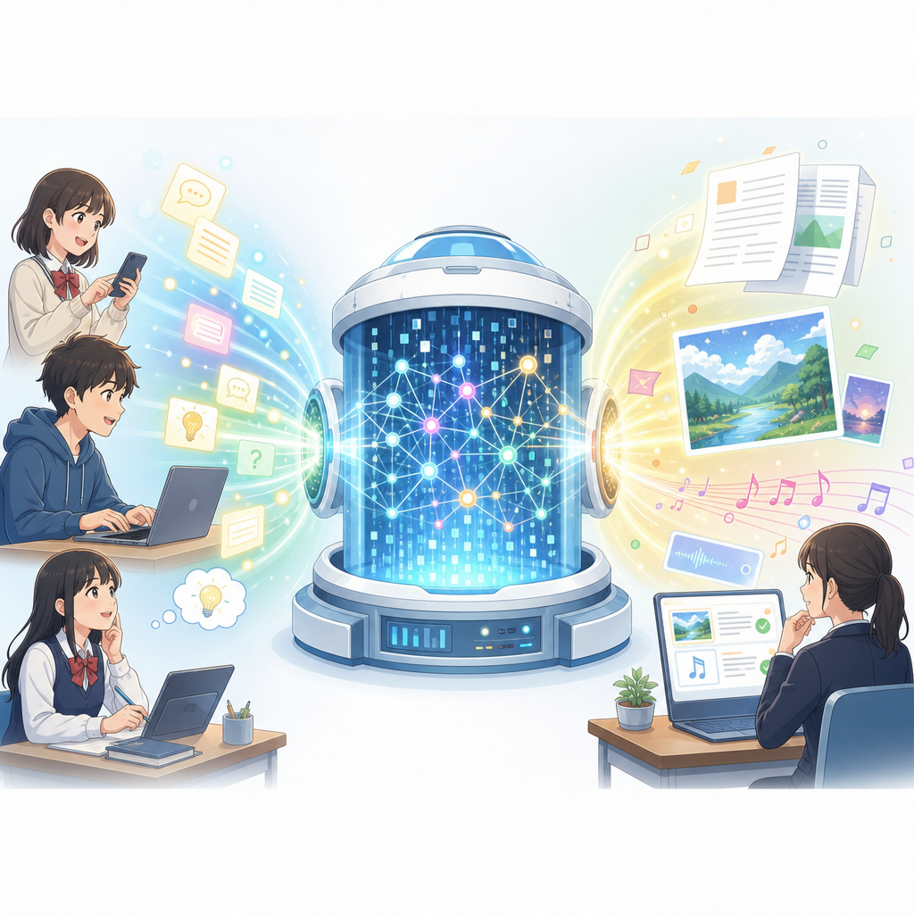
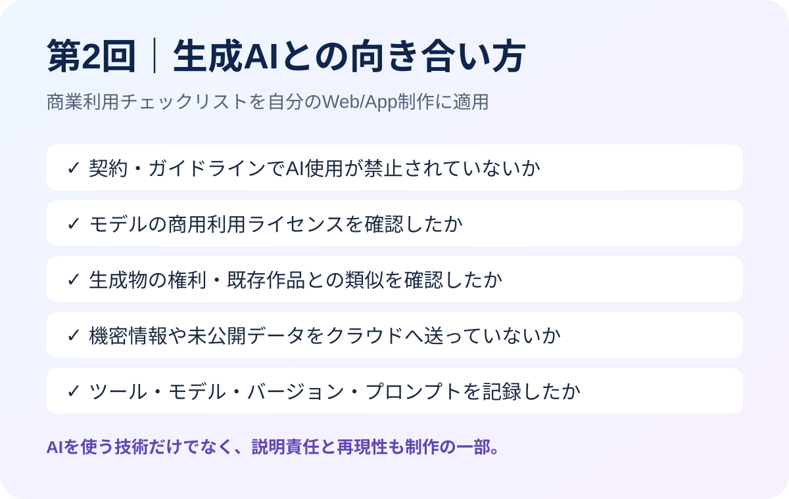
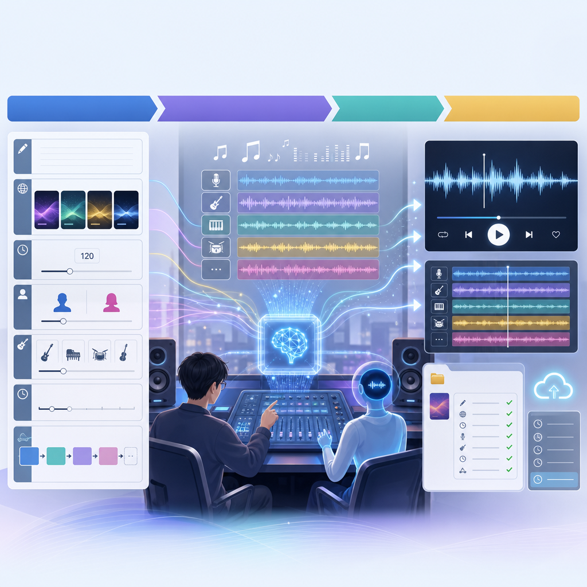
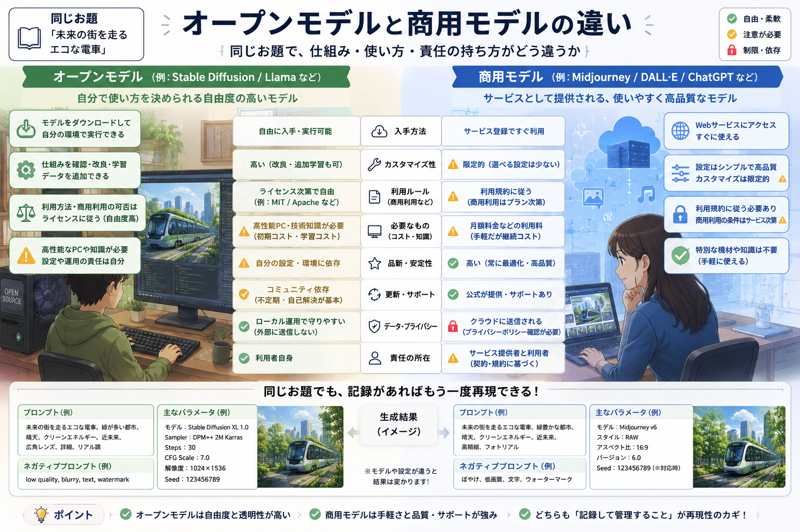
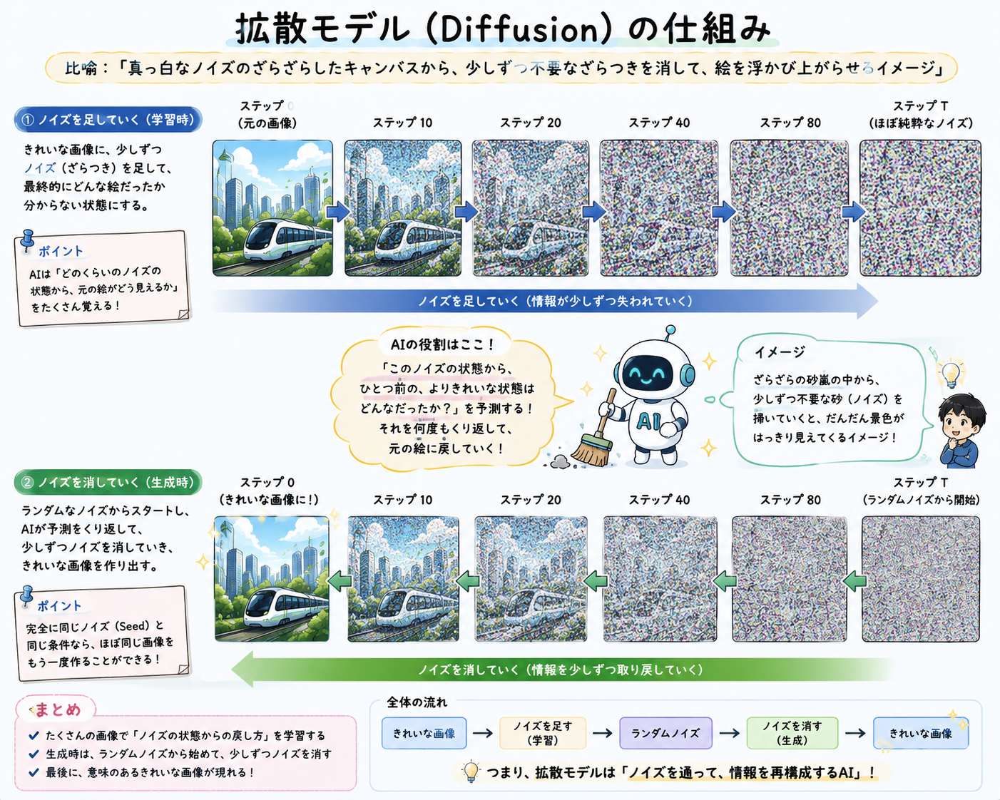
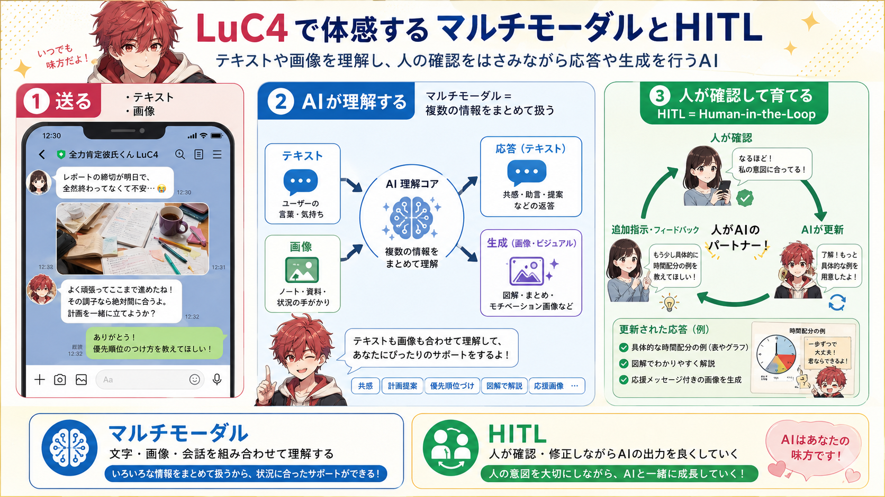
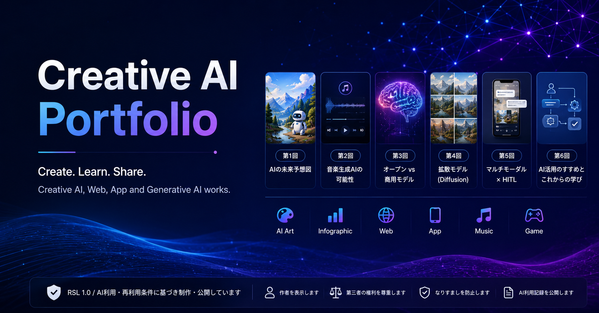
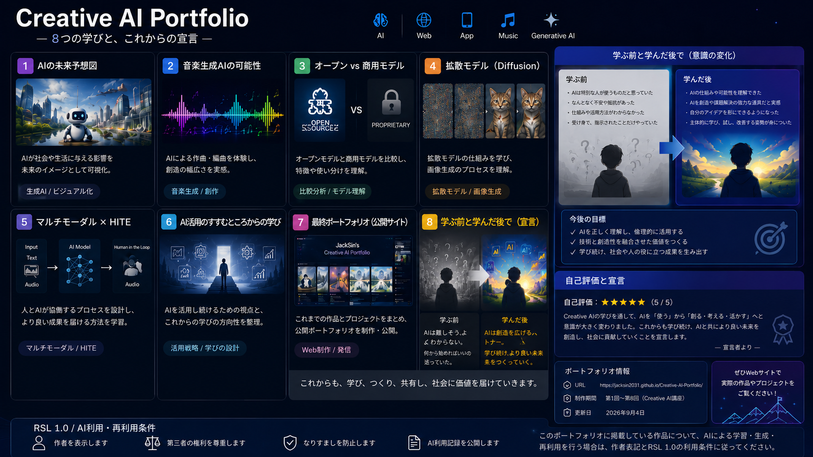

第1回
AIは魔法の箱？
入力 → 生成AI → 出力という基本構造と、「最後に確認するのは人間」という視点を表現。
CREATIVE AI PORTFOLIO · 2026
生成AIを「出力する道具」ではなく、考え、設計し、検証する制作パートナーとして学んだ8つの記録。
プロンプト、生成条件、権利、再現性までを制作ログとして残し、AIとの関係を「使う」から「創る・考える・活かす」へ更新していくことを目指しました。
CREATIVE AI COURSE
各回で学んだ概念を、1枚の画像レポートやポートフォリオ作品として可視化しました。

入力 → 生成AI → 出力という基本構造と、「最後に確認するのは人間」という視点を表現。

自分のWeb/App制作に、契約・ライセンス・知財・機密情報・制作ログのチェックを適用。

Lyrics、Style、BPM、Vocal、Structureを設計し、生成条件を記録する音楽制作を可視化。

自由度・環境構築・ライセンスと、手軽さ・品質・サポートの違いを同じお題で比較。

Diffusionを「ノイズを少しずつ掃いて景色を浮かび上がらせる」比喩で説明。

文字と画像をまとめて理解し、人間の確認とフィードバックで出力を育てる循環を表現。

GitHub Pagesで公開する作品サイトを構築し、作品群とAI利用・再利用条件を整理して発信。

AIを便利な道具として使う段階から、理解し、考え、責任を持って活用する立場への変化を宣言。
FINAL PRESENTATION
「学ぶ前と学んだ後」を振り返り、Creative AIに対する現在の立ち位置を約1分で紹介します。
OTHER PROJECTS
授業以外でも、AIをシステム設計・Web/App・ゲーム制作に活用しています。
ゲーム／デスクトップアプリ向けのAIオートメーション基盤。ワークフロー、Runtime、Plugin、Storageなどを設計。
Rust · Python · Tauri香港⇄日本旅行向けの旅行支援アプリ。旅程、翻訳、OCR、ルート、予算などを統合。
Flutter · Dart · AIAIが世界観を生成し、探索とアイテム収集を通じて世界を理解していくブラウザゲーム構想。
AI · Web · Game Design知識境界、長期記憶、Experience Recorder、Self Evolutionを備えたローカルAIメモリ基盤。
Local AI · Memory · EvaluationRSL 1.0
このポートフォリオでは、作品の制作過程・出典・利用条件をできる限り明示します。AIで利用・再利用する場合も、第三者の権利と各サービスの利用条件を優先します。
※ 授業で確定したRSL 1.0の個別条件がある場合は、このセクションをその条件に合わせて更新します。